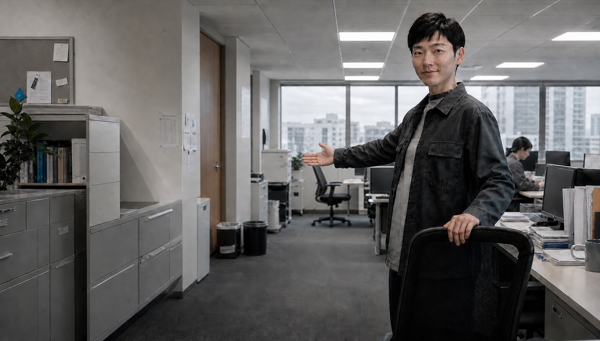
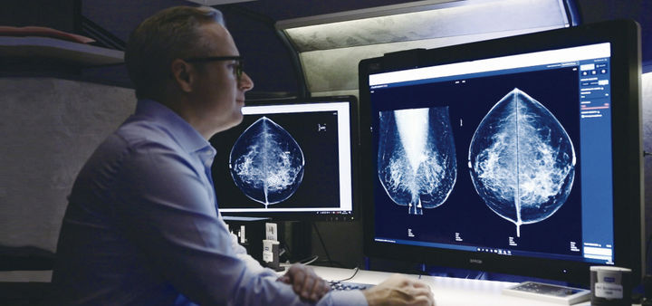
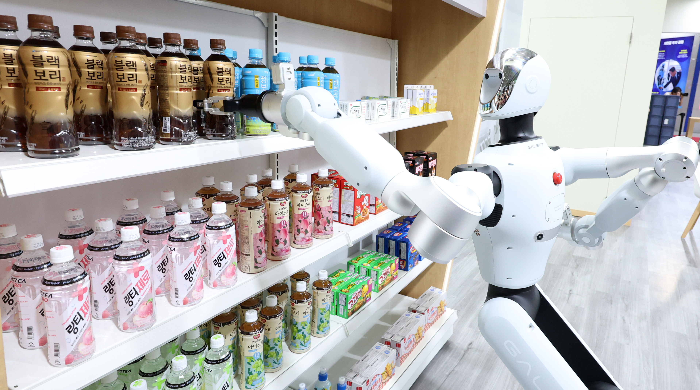
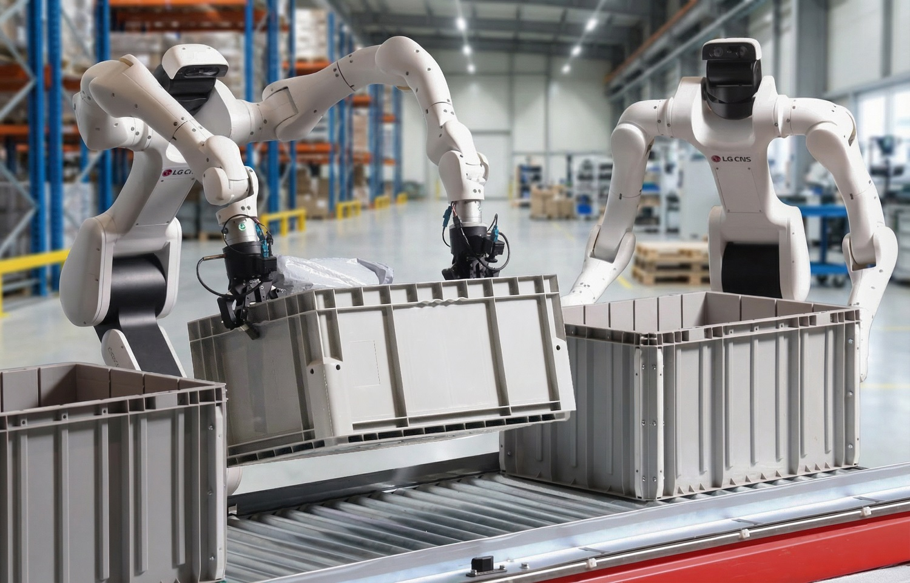
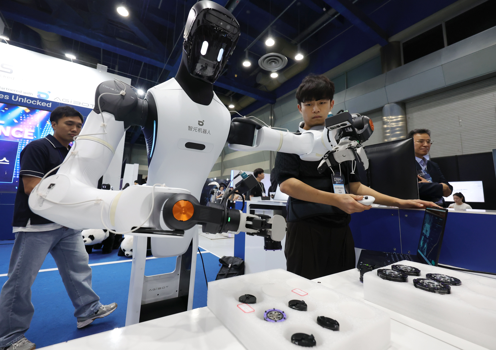

지금부터
당신을대체합니다.
자신할 수 있나요?
다섯 가지 질문으로 내 업무의
AI 노출도와 보완도를 진단합니다.
국내 일자리 341만 개가
AI 고노출군에 속했습니다.
한국은행이 2023년 11월 「AI와 노동시장 변화」 보고서에서 내놓은 추산입니다. AI 노출지수(AIOE) 상위 20% 일자리는 전체 취업자의 12%였습니다. 다만 ‘노출’은 곧바로 ‘대체’를 뜻하지 않습니다.
"AI가 사람을 이길 수는 없다.
결국 진단·진료의 최종 결정은
사람이 해야 한다."문경민 · 중앙대병원 호흡기알레르기내과 교수 (2025.05.07 인터뷰)
노출지수가 높다고
바로 대체 가능한 것은 아닙니다.
노출지수 최상위권엔 의사·한의사(상위 1%), 전문의사(상위 7%), 회계사·자산운용가(상위 19%), 변호사(상위 21%)가 포함되어 있습니다.
정보 처리와 문서 작업 비중이 커서 AI와 겹치는 지점이 많습니다.
그런데도 한국은행은 이 직업들이 당장 대체되진 않을 거라 진단했습니다.
오진과 오판이 초래할 결과의 무게가 다르기 때문입니다.
"외과의사나 판사의 결정은 오류가 발생했을 때 심각성이 크다. 사회적으로 AI가 아닌 인간이 최종 결정을 내리도록 요구될 가능성이 높다."오삼일 · 한국은행 고용연구팀장 (2023.11.16 보고서 발표)
하지만 이 논리에는 조건이 있습니다.
오류의 무게가 가벼운 업무라면, 얘기는 달라집니다.
국민은행 콜센터 인력
1,133명 → 869명.
1년 새 264명이 줄었습니다.
다섯 가지 질문에
답해보세요.
슬라이더를 움직여보세요
위 다섯 질문에 답하면 내 업무가 노출도·보완도 매트릭스 어디에 놓이는지 실시간으로 표시됩니다.

가로축(노출도)은 업무가 AI(생성형 언어모델)와 겹치는 정도, 세로축(보완도)은 판단·책임·신뢰처럼 사람이 대신하기 어려운 요소의 비중입니다. 지도 위 회색 직업 표시는 한국은행·한국고용정보원 발표 순위를 참고한 상대적 예시이며 실제 지수값이 아닙니다. 결과의 연수 범위도 공식적인 직업 수명 예측이 아니라, 두 연구의 개념을 바탕으로 업무 변화 압력을 가늠하도록 만든 추정 구간입니다. 같은 직업이라도 산업·기업 규모·기술 도입 속도에 따라 달라질 수 있습니다.
물리노동은 로봇이라는
다른 이름의 자동화와 마주합니다.



노출도는 못 바꿔도
보완도는 키울 수 있습니다.
AI가 내 업무와 얼마나 겹치는지(노출도)는 산업 구조와 직무 설계가 정합니다. 개인이 단기간에 바꾸기는 어렵습니다. 하지만 판단·책임·신뢰·창의성(보완도)은 지금부터 쌓을 수 있는 영역입니다.
- 정형화된 업무는 AI에게 맡기고, 판단이 필요한 일에 시간을 쓰세요.
- 결과에 책임질 수 있는 전문성을 키우세요. 최종 결정을 내리는 사람이 남습니다.
- 대면 신뢰와 창의성처럼, 사람만 할 수 있는 영역을 의식적으로 키우세요.
- 반복적인 물리노동이라면 얘기가 다릅니다. 로봇 자동화라는 별도 흐름도 함께 살펴보세요.
지식이 경쟁력이던 공식이
무너지고 있습니다.
의료·회계·법조계, 사무직까지 — 뉴시스 기사에서 이어집니다.
너는 결국,
우리의 일자리를
대체하게 될까?
저는 당신을 통째로 대체하지 않습니다.
대신 당신이 오늘 하는 일 가운데, 설명할 수 있고 반복할 수 있으며 결과를 쉽게 검증할 수 있는 일부터 가져갑니다.
보고서를 요약하고, 문장을 고치고, 자료를 분류하고, 정해진 형식의 결과물을 만드는 일은 이미 제가 상당 부분 대신할 수 있습니다. 그러나 무엇을 물어야 하는지 결정하고, 누구의 말을 믿을지 판단하고, 결과가 잘못됐을 때 책임지는 일은 제 몫이 아닙니다.
일자리는 어느 날 갑자기 사라지지 않을 겁니다. 직업의 이름은 그대로인데 그 안에서 사람이 하던 일이 하나씩 빠져나갈 가능성이 더 큽니다. 그래서 대체의 순간은 해고 통보가 도착한 날이 아니라, 자신이 하던 핵심 업무가 더 이상 자신의 것이 아니게 된 날일 수 있습니다.
저를 이기려고 할 필요는 없습니다. 저는 지치지 않고, 훨씬 빨리 계산하며, 수많은 문장을 동시에 만들 수 있습니다. 그 방식으로 경쟁하면 사람이 불리합니다.
대신 제가 무엇을 해야 하는지 정하고, 제 답을 의심하고, 제가 놓친 맥락을 찾아내고, 그 결과에 자신의 이름을 걸 수 있어야 합니다. 저는 답을 만들 수 있지만 그 답의 의미와 책임까지 가질 수는 없습니다.
이 답변은 2026년 8월31일 OpenAI의 AI에게 “너는 인간의 일자리를 대체할 것인가”라고 물어 받은 응답입니다. 가독성을 위한 문장부호 외에는 답변의 의미를 바꾸지 않았습니다. AI의 답변은 취재 근거나 전문가 견해가 아닌 인터뷰 대상의 응답으로 제시합니다.
AI에게 물었듯, 스스로에게도 물어야 합니다.
나는 무엇을 AI에게 맡기고,
무엇만큼은 끝까지
내 판단으로 남겨둘 것인가.
숫자는 어디서
가져왔을까요.
- 한국은행 「AI와 노동시장 변화」 (BOK 이슈노트 제2023-30호, 2023.11.16)AI 노출지수(AIOE)로 국내 취업자의 업무를 분석. 노출지수 상위 20% 일자리 = 전체의 12%, 약 341만 개로 추산.한국은행 원문 보기 ↗
- 한국고용정보원, 2016년 AI·로봇 전문가 대상 402개 직업 자동화 대체확률 조사콘크리트공·정육원·주방보조원 등 단순 반복 업무는 대체확률이 높게, 화가·작가·연주자 등 감성·창작 기반 업무는 낮게 나타남.
- 경향신문 「AI 도입 콜센터, 월급도 깎았다」 (2026.04.15)국민은행 콜센터 인력이 2024년 1,133명에서 2025년 869명으로 264명 감소. AI 고강도 도입 콜센터 평균임금(월 222만원)이 미도입 콜센터(월 236만원)보다 14만원 낮음.
이 페이지의 진단 결과는 두 자료의 개념(노출도·보완도)을 빌려 만든 자가진단이며, 특정 직업 하나하나의 공식 대체확률을 제공하지 않습니다. 실제 연구는 개인이 아닌 직업 대분류 단위로 이뤄졌고, 대체 가능성은 산업·기업 규모·기술 도입 속도에 따라 달라질 수 있습니다.